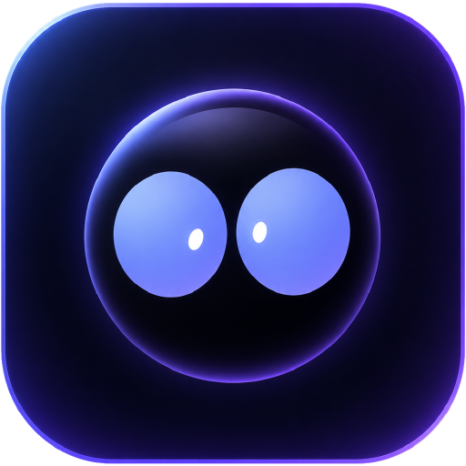
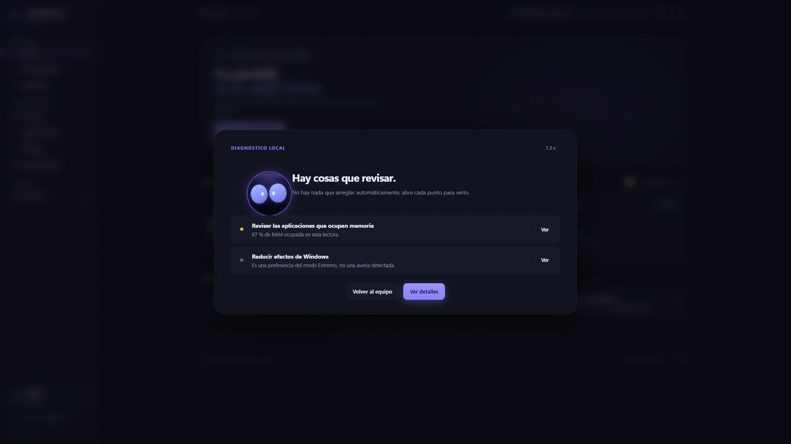
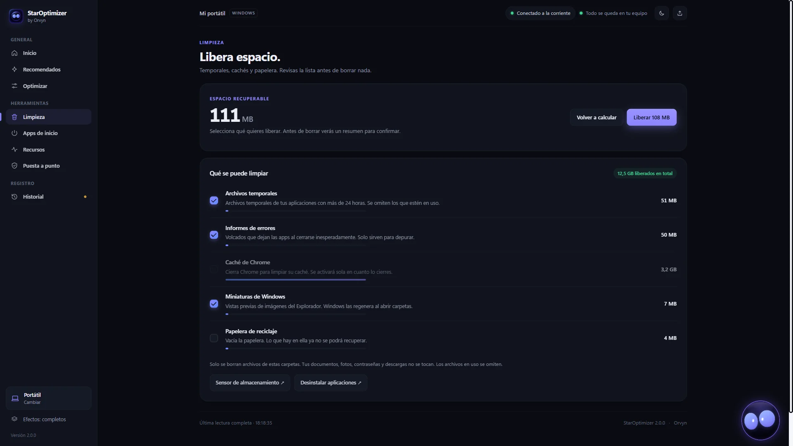

Estudio de software · Windows
Software que se siente
bien hecho.
Diseñamos herramientas para Windows que respetan tu equipo y tu tiempo: claras, rápidas y sin letra pequeña.
Beta gratuita · Windows 10/11 · Sin telemetría
Sin telemetría✦Todo reversible✦Hecho para Windows✦Sin anuncios✦Nada sin avisar✦
Sin telemetría✦Todo reversible✦Hecho para Windows✦Sin anuncios✦Nada sin avisar✦
Productos
Lo que estamos construyendo

StarOptimizer
Optimizador para Windows 10/11 · Próximamente en Microsoft Store
Analiza tu PC con lecturas reales, te propone un plan claro y te enseña exactamente qué cambia antes de tocar nada. Todo se puede deshacer.
- Diagnóstico local, sin telemetría
- Ajustes reversibles con historial
- Limpieza de espacio revisada por ti


- 01
Mira cómo está tu PC
Procesador, memoria, discos y lo que se abre al iniciar, leído directamente de Windows y en tu equipo.
- 02
Un plan que entiendes
Cada ajuste dice qué cambia y por qué. Tú eliges cuáles aplicar, y todos se pueden deshacer desde Historial.
- 03
Libera espacio sin sustos
Temporales, cachés y papelera agrupados por categoría. Ves cuánto ocupa cada cosa antes de borrar nada.
Nivo
En desarrollo
Una isla dinámica para el escritorio de Windows: música, temporizadores y avisos en una pastilla que cambia de forma con lo que está pasando.
Seguir el desarrollo ↗
ReproduciendoTu lista
Temporizador04:59
Descarga completada
Principios
Cómo hacemos las cosas
01Tu equipo, tus datos
Lo que analizamos se queda en tu PC. Sin cuentas, sin anuncios y sin enviar nada a ningún servidor.
02Nada sin avisar
Antes de cambiar algo te enseñamos el valor actual y el nuevo. Y siempre hay un botón para volver atrás.
03Honestidad técnica
No inventamos puntuaciones ni prometemos FPS. Si algo está bien, te lo decimos y no tocamos nada.
Pruébalo
Tu PC, explicado.
Y todo se puede deshacer.
StarOptimizer es gratis mientras está en beta. Descárgalo, mira el diagnóstico y decide tú qué cambiar.